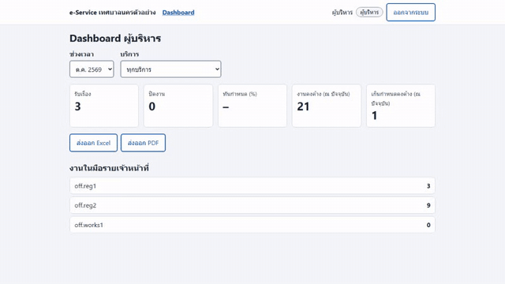
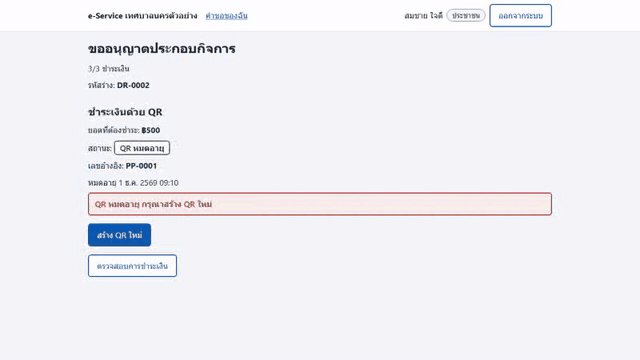
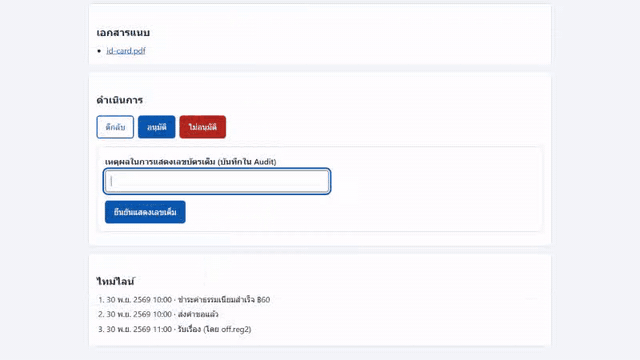
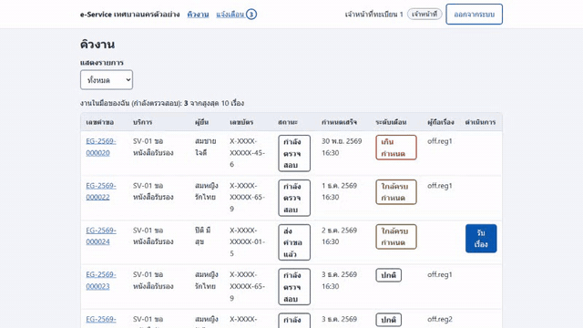
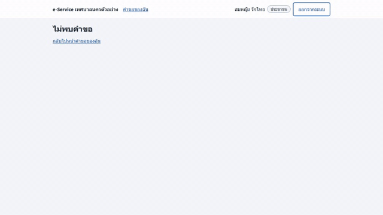
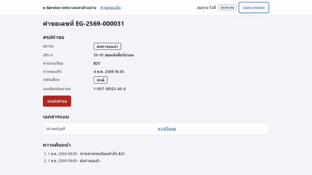
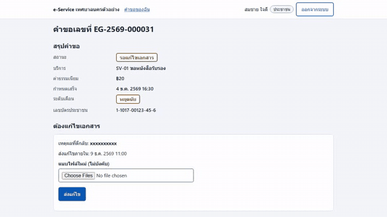
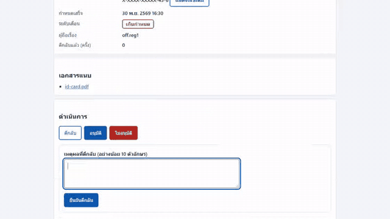

เว็บปกติ 51/51 ผ่าน · BUG_MODE จับได้ 12/12 ตัว (และชุดรวม 2 ชุด) · รันสอง sweep ได้ผลเหมือนกัน · รายละเอียด: RESULT.md · BUG-HUNT.md · ../REPORT.md
| BUG_MODE | คาดว่าล้ม | ล้มจริง | ล้มเกิน | ควรล้มแต่ผ่าน | 2 รอบ | ข้อความแรก |
|---|---|---|---|---|---|---|
| B01 | TC-FEE-01 | TC-FEE-01 | – | – | เหมือนกัน | Error: API SV-03 พื้นที่ 101 fee: expected 1010 but received 1000 |
| B02 | TC-UPLOAD-01 | TC-UPLOAD-01 | – | – | เหมือนกัน | Error: API ไฟล์ 5242880 ไบต์ (≤ 5 MB ต้องรับ): expected HTTP 201 but received 400 body={"code":"FILE_TOO_LARGE","message":"ไฟล์ใหญ่เกิน 5 MB"} |
| B03 | TC-SLA-01 · TC-SLA-02 | TC-NOTI-02 · TC-RBAC-04 · TC-SLA-01 · TC-SLA-02 · TC-SLA-03 | ⚠ TC-NOTI-02 (นอกรายการ) · TC-RBAC-04 (อาจล้มด้วย ตามแผน) · TC-SLA-03 (อาจล้มด้วย ตามแผน) | – | เหมือนกัน | Error: ส่วน B off.reg2 API items (caseNo|level): expected ["EG-2569-000013|overdue","EG-2569-000015|overdue","EG-2569-000016|near","EG-2569-000024|overdue","EG-2569-000025|overdue","EG-2569-000026|overdue","EG-2569-000027|overdue","EG-2569-000028|overdue","EG-2569-000029|overdue","EG-2569-000030|overdue"] but received ["EG-2569-000013|overdue","EG-2569-000015|overdue","EG-2569-000024|overdue","EG-2569-000025|overdue","EG-2569-000026|overdue","EG-2569-000027|overdue","EG-2569-000028|overdue","EG-2569-000029|overdue","EG-2569-000030|overdue"] |
| B04 | TC-SLA-02 | TC-SLA-02 | – | – | เหมือนกัน | Error: ส่วน 1 dueAt หลังหยุดนับ 1 วันทำการ (พฤ.3) = ศ.4 + 1 วันทำการ: expected "2026-12-08T16:30:00+07:00" but received "2026-12-04T16:30:00+07:00" |
| B05 | TC-PAY-01 | TC-PAY-01 | – | – | เหมือนกัน | Error: รอบ 3 (อายุ 15:00) pay PP-0001 (ต้องหมดอายุ ไม่ใช่จ่ายได้): expected HTTP 410 but received 200 body={"status":"PAID","caseNo":"EG-2569-000031","receiptNo":"RC-2569-000031","duplicate":false} |
| B06 | TC-RBAC-01 | TC-RBAC-01 | – | – | เหมือนกัน | Error: UI HTTP ของ /citizen/cases/…000005 (ของสมชาย): expected 404 but received 200 |
| B07 | TC-RBAC-02 | TC-RBAC-02 | – | – | เหมือนกัน | Error: 1 off.reg2 approve …000014 (SV-02 PENDING_APPROVAL): expected HTTP 403 but received 200 body={"status":"APPROVED"} |
| B08 | TC-QUEUE-02 | TC-QUEUE-02 | – | – | เหมือนกัน | Error: ส่วน 1 Audit CLAIM ของ …000028 ต้องมี 1 แถวเท่านั้น: expected 1 but received 2 |
| B09 | TC-PDPA-02 | TC-PDPA-02 | – | – | เหมือนกัน | Error: off.reg1 GET /api/officer/queue?filter=all: ต้องไม่พบเลข 13 หลักติดกัน · พบ 1101700123456 |
| B10 | TC-DASH-02 | TC-DASH-01 · TC-DASH-02 · TC-DASH-03 | TC-DASH-01 (อาจล้มด้วย ตามแผน) · TC-DASH-03 (อาจล้มด้วย ตามแผน) | – | เหมือนกัน | Error: ALL ธ.ค. kpi-ontime-pct: expected "–" |
| B11 | TC-PDPA-03 · TC-AUDIT-01 | TC-AUDIT-01 · TC-PDPA-03 | – | – | เหมือนกัน | Error: audit count (ไม่กรอง): expected 16 but received 15 |
| B12 | TC-WORKFLOW-04 | TC-WORKFLOW-04 | – | – | เหมือนกัน | Error: A.5 return-btn ต้อง 0 (B12: ตีกลับครั้งที่ 3 ต้องไม่ได้): expected count 0 |
| B03+B07 | TC-SLA-01 · TC-SLA-02 · TC-RBAC-02 | TC-NOTI-02 · TC-RBAC-02 · TC-RBAC-04 · TC-SLA-01 · TC-SLA-02 · TC-SLA-03 | ⚠ TC-NOTI-02 (นอกรายการ) · TC-RBAC-04 (อาจล้มด้วย ตามแผน) · TC-SLA-03 (อาจล้มด้วย ตามแผน) | – | เหมือนกัน | Error: ส่วน B off.reg2 API items (caseNo|level): expected ["EG-2569-000013|overdue","EG-2569-000015|overdue","EG-2569-000016|near","EG-2569-000024|overdue","EG-2569-000025|overdue","EG-2569-000026|overdue","EG-2569-000027|overdue","EG-2569-000028|overdue","EG-2569-000029|overdue","EG-2569-000030|overdue"] but received ["EG-2569-000013|overdue","EG-2569-000015|overdue","EG-2569-000024|overdue","EG-2569-000025|overdue","EG-2569-000026|overdue","EG-2569-000027|overdue","EG-2569-000028|overdue","EG-2569-000029|overdue","EG-2569-000030|overdue"] |
| B01+B05+B09 | TC-FEE-01 · TC-PAY-01 · TC-PDPA-02 | TC-FEE-01 · TC-PAY-01 · TC-PDPA-02 | – | – | เหมือนกัน | Error: API SV-03 พื้นที่ 101 fee: expected 1010 but received 1000 |
| TC | ชื่อ | ผล | ms | GIF |
|---|---|---|---|---|
| TC-AUDIT-01 | เหตุการณ์และฟิลด์ใน Audit | ✅ ผ่าน | 2012 | gif |
| TC-AUDIT-02 | Audit แก้/ลบไม่ได้ (405) | ✅ ผ่าน | 622 | |
| TC-AUDIT-03 | กรองช่วงวันที่ตามเวลาไทย | ✅ ผ่าน | 1322 | |
| TC-AUTH-01 | เลขบัตร 13 หลัก + checksum | ✅ ผ่าน | 2483 | |
| TC-AUTH-02 | OTP ผิด 3 ครั้งล็อก 15 นาที | ✅ ผ่าน | 1779 | |
| TC-AUTH-03 | ลงทะเบียนครั้งแรก | ✅ ผ่าน | 3540 | |
| TC-AUTH-04 | เจ้าหน้าที่ SSO จำลองและหน้าตั้งต้นตามบทบาท | ✅ ผ่าน | 4496 | |
| TC-DASH-01 | Dashboard ตัวเลขเริ่มต้น | ✅ ผ่าน | 686 | |
| TC-DASH-02 | Dashboard ย้อนหลัง พ.ย. ต.ค. รายปี | ✅ ผ่าน | 1446 | gif |
| TC-DASH-03 | ส่งออก Excel/PDF เท่าหน้าจอ และไม่มีข้อมูลส่วนบุคคล | ✅ ผ่าน | 10192 | |
| TC-DASH-04 | ค่าขอบ "ทันกำหนด" 16:29:59 / 16:30:00 / 16:30:01 | ✅ ผ่าน | 3121 | |
| TC-DOC-01 | ออกเอกสารและข้อมูลใน PDF | ✅ ผ่าน | 2504 | |
| TC-DOC-02 | ตรวจเอกสาร /verify | ✅ ผ่าน | 1223 | |
| TC-DOC-03 | เอกสารหมดอายุและลายเซ็นไม่ตรง | ✅ ผ่าน | 3161 | |
| TC-FEE-01 | ค่าธรรมเนียม SV-01/SV-02/SV-03 | ✅ ผ่าน | 1242 | gif |
| TC-NFR-01 | Responsive 375/768/1280 | ✅ ผ่าน | 8161 | |
| TC-NFR-02 | WCAG: axe + คีย์บอร์ด + label + สถานะไม่ใช้สีอย่างเดียว | ✅ ผ่าน | 12308 | |
| TC-NFR-03 | Health เวลาโหลด และผลซ้ำได้ | ✅ ผ่าน | 2742 | |
| TC-NFR-04 | เข้ารหัสข้อมูลส่วนบุคคลที่เก็บ (inspection) | ✅ ผ่าน | 460 | |
| TC-NOTI-01 | ผู้รับแจ้งเตือนตามระดับ | ✅ ผ่าน | 2560 | |
| TC-NOTI-02 | ไม่แจ้งซ้ำ ข้ามระดับ และขั้นรออนุมัติ/รอออกเอกสาร | ✅ ผ่าน | 4039 | |
| TC-PAY-01 | อายุ QR 15:00 | ✅ ผ่าน | 833 | gif |
| TC-PAY-02 | ยอดเงินและ callback ซ้ำ | ✅ ผ่าน | 447 | |
| TC-PAY-03 | ชำระพร้อมกัน เลขไม่ซ้ำ | ✅ ผ่าน | 739 | |
| TC-PAY-04 | เลขคำขอข้ามปี 2569 → 2570 | ✅ ผ่าน | 1332 | |
| TC-PDPA-01 | ปิดบังเลขบัตรบนจอ | ✅ ผ่าน | 2000 | |
| TC-PDPA-02 | API (JSON) ไม่ส่งเลขบัตรเต็ม | ✅ ผ่าน | 333 | |
| TC-PDPA-03 | แสดงเลขเต็มต้องมีเหตุผลและ Audit | ✅ ผ่าน | 1532 | gif |
| TC-QUEUE-01 | ลำดับคิวและขอบเขตแผนก | ✅ ผ่าน | 1579 | |
| TC-QUEUE-02 | รับเรื่องซ้อน (พร้อมกันและต่อกัน) | ✅ ผ่าน | 1967 | gif |
| TC-QUEUE-03 | งานในมือสูงสุด 10 | ✅ ผ่าน | 3580 | |
| TC-RBAC-01 | ประชาชนเปิดคำขอคนอื่นไม่ได้ (IDOR) | ✅ ผ่าน | 855 | gif |
| TC-RBAC-02 | เจ้าหน้าที่อนุมัติ SV-02 ไม่ได้ (API) | ✅ ผ่าน | 1395 | gif |
| TC-RBAC-03 | ตารางสิทธิ์หน้า/API ตามบทบาท | ✅ ผ่าน | 9696 | |
| TC-RBAC-04 | ผู้ดูแลระบบ: บริการ วันหยุด ผู้ใช้ และยอดที่ล็อก | ✅ ผ่าน | 2377 | |
| TC-RBAC-05 | สิทธิ์เปิด/ดาวน์โหลดไฟล์แนบ | ✅ ผ่าน | 1785 | |
| TC-RBAC-06 | ผู้ดูแลระบบ: ช่วงค่าที่ยอมรับ | ✅ ผ่าน | 2623 | |
| TC-SLA-01 | กำหนดเสร็จตามตารางวันที่ | ✅ ผ่าน | 5297 | gif |
| TC-SLA-02 | หยุดนับ SLA ระหว่างรอแก้ไข | ✅ ผ่าน | 4094 | gif |
| TC-SLA-03 | ระดับเตือน ปกติ/ใกล้/เกิน | ✅ ผ่าน | 4513 | |
| TC-SUBMIT-01 | ยื่นคำขอ SV-01 ครบวงจร | ✅ ผ่าน | 1337 | |
| TC-SUBMIT-02 | เอกสารบังคับครบก่อนชำระ | ✅ ผ่าน | 1074 | |
| TC-SUBMIT-03 | ร่าง การลบร่าง และการยกเลิก | ✅ ผ่าน | 4861 | |
| TC-UPLOAD-01 | ขนาดและจำนวนไฟล์ | ✅ ผ่าน | 3514 | gif |
| TC-UPLOAD-02 | ชนิดไฟล์จากเนื้อไฟล์ | ✅ ผ่าน | 1287 | |
| TC-WORKFLOW-01 | SV-01 อนุมัติ + ออกเอกสาร | ✅ ผ่าน | 913 | |
| TC-WORKFLOW-02 | SV-02 ผ่านหัวหน้า | ✅ ผ่าน | 3470 | |
| TC-WORKFLOW-03 | SV-03 สามขั้นตอน | ✅ ผ่าน | 3235 | |
| TC-WORKFLOW-04 | ตีกลับสูงสุด 2 ครั้ง และผลหลังครบ | ✅ ผ่าน | 3494 | gif |
| TC-WORKFLOW-05 | เหตุผล ≥ 10 ตัวอักษร (ตีกลับ/ไม่อนุมัติ) | ✅ ผ่าน | 4233 | |
| TC-WORKFLOW-06 | เวลาแก้ไข 168 ชั่วโมง | ✅ ผ่าน | 2363 |







